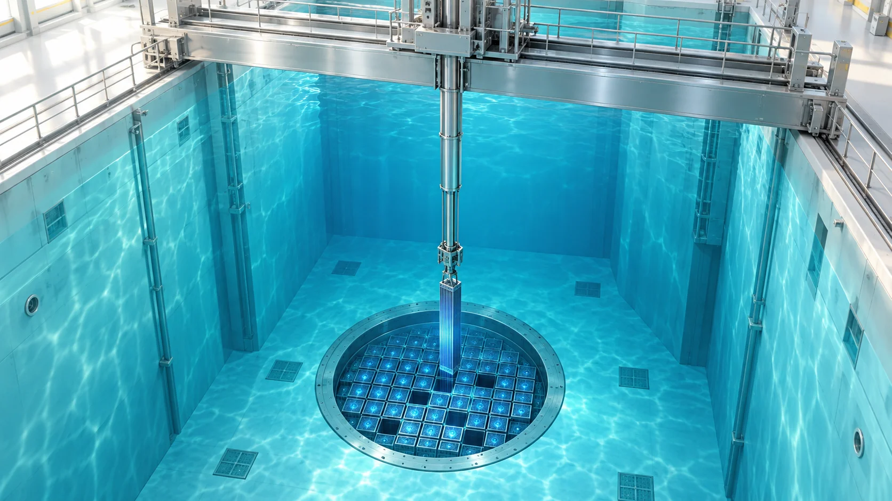
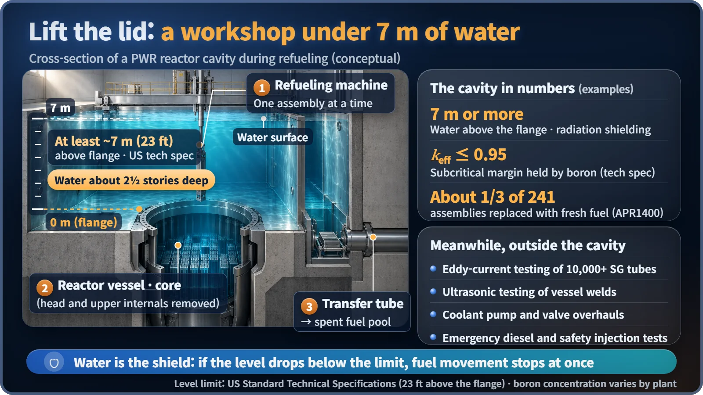
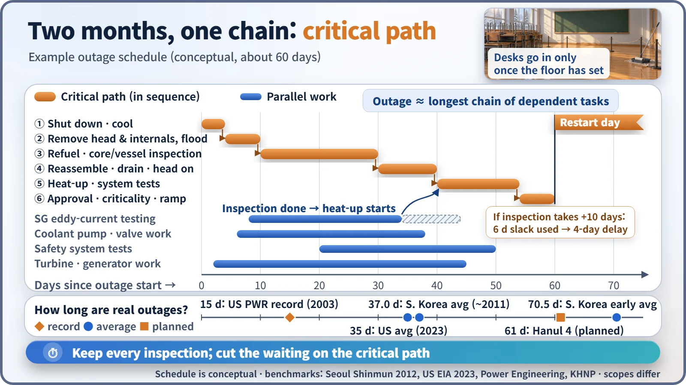

Plant Operation, Control & the Grid · 249
Nuclear Plants Get School Holidays Too — The Planned Maintenance Outage Every 18 Months
A booked stop, not a breakdown: refueling, statutory inspections and maintenance packed into about two months, timed by one chain of dependent tasks.

Roughly every 18 months, a pressurized water reactor shuts down on a booked date for about two months to refuel and to complete statutory inspections and equipment maintenance. The reactor cavity is flooded with at least about 7 m of borated water, hundreds of jobs run in parallel, and one chain of dependent tasks, the critical path, sets how long the outage lasts. [1]
A notice from school
"During winter break, the cafeteria floor and pipes in the main building will be replaced. Access to the school will be restricted while work is under way. The first day of the new term is unchanged."
A school can't rip up its floors during term, so the big jobs get crammed into the holidays, and the contractor plans backward from the first day of term: the floor has to cure before the tables go in. Nuclear power plants have holidays like this too. Roughly every 18 months, a plant deliberately shuts down and spends about two months stopped. This is the planned maintenance outage (in South Korea, a "planned preventive maintenance" outage).
It doesn't stop because it broke; it stops on a booked date
A planned maintenance outage is a period in which, following a plan made in advance, the reactor is shut down, fuel is replaced, and statutory inspections plus inspection, maintenance and testing of major equipment are all done together. The number of days stopped is the outage duration. That's different from an unplanned shutdown, where a fault stops the plant without warning.
Why stop a perfectly good plant? First, fuel. Most of South Korea's reactors are pressurized water reactors (PWRs, which keep water under high pressure so it doesn't boil while carrying heat), and they can't change fuel while running, because the thick lid of the reactor pressure vessel has to come off. The heavy-water reactors at Wolsong are different: they change fuel while operating.
Second, the law. Under South Korea's Nuclear Safety Act, a power reactor must undergo a periodic inspection by the Nuclear Safety and Security Commission within 20 months of the previous one, and PWRs have taken it during refueling. With a fuel cycle of about 18 months meshing with that inspection cycle, the holiday dates are effectively set. From January 2027, the rules are scheduled to change so that inspections can be spread across the year. [2]
Open the lid and it becomes a workshop under 7 meters of water

After the reactor is shut down and cooled, the lid and upper internals are lifted out, and the large concrete pool above, the reactor cavity, is filled with borated water. US Standard Technical Specifications require at least about 7 m (23 ft) of water above the vessel flange; if the level falls below that, fuel movement must stop immediately. The water is a thick radiation shield, cooling systems circulate it to carry away the fuel's leftover heat, and dissolved boron absorbs neutrons, holding the reactor well away from sustaining a chain reaction. [3]
In that water, a refueling machine moves fuel assemblies one at a time. In South Korea's APR1400 design, about a third of the 241 assemblies in the core are replaced with fresh ones and the rest are rearranged. Spent fuel travels through a water-filled transfer tube to the spent fuel pool in the neighboring building. [4]
Meanwhile, outside the cavity: eddy-current testing of more than 10,000 thin steam generator tubes, ultrasonic inspection of reactor vessel welds, overhauls of coolant pumps and valves, and tests of emergency diesel generators and safety injection that can't be done during operation.
The longest chain decides the two months
Most jobs run at the same time, but there's one chain where each job can start only when the one before it has finished: open the lid, fill the water, move the fuel, close the lid. That chain is the critical path.
Outage duration ≈ the time of the longest chain of tasks linked by precedence

However long the steam generator inspection takes, the overall date doesn't slip as long as it doesn't block the chain. But if a parallel job drags on and gets in front of the chain, the whole plant's first day of term is pushed back.
| Benchmark | Outage duration |
|---|---|
| South Korea, early average | 70.5 days |
| South Korea, average around 2011 | 37.0 days |
| Hanul Unit 4, 18th outage (planned) | about 61 days |
| US average, 2023 (to early October) | about 35 days |
| US PWR near-record (2003) | 15 days |
Hanbit Unit 6 and Saeul Unit 1 were also scheduled for around two months. In 2017–2021, South Korean plants' cumulative outage days rose to about 1.8 times those of the previous five years. Because work scope and regulatory systems differ, the numbers alone can't tell you who is doing well or badly. [5] [6]
Short is good; thorough is better
Each outage day is a day without generation, so there's a temptation to cut it. In the early 2010s there were concerns that the race to shorten outages was pressuring workers, and a parliamentary audit pointed out that some preventive maintenance items had been skipped.
On the other side, in 2017, during a planned outage, Hanbit Unit 4 found corrosion in the containment's steel liner and more than 100 voids in the concrete. It took 2,034 days to complete repairs and restart. Looking closely is what revealed the hidden defects. [7]
So a good outage gets shorter not by dropping inspections but by cutting waiting time through preparation and parallel work, like a school that stocks its materials before the holiday starts.
Three easily confused labels
Planned outage vs periodic inspection: maintenance is work the operator does; the periodic inspection is done by the regulator under the law. They have simply been carried out in the same period.
Outage duration vs fuel cycle: if the roughly 18 months on one fuel load is the school term, the outage is the holiday in between.
Planned outage vs unplanned shutdown: stopping on a booked date versus stopping suddenly because of a fault.
Key takeaways
A nuclear plant's holiday isn't time off: it's time to change fuel, look under the lid and get fit for the next 18 months, and the new term begins only when the regulator approves the restart. Next time you read that a unit "begins its planned maintenance outage," picture the workshop under 7 meters of water and that single critical path.